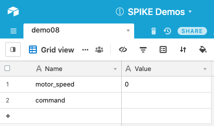
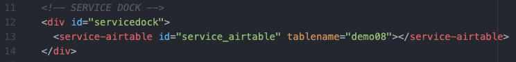
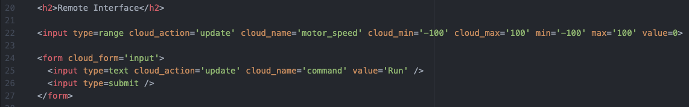
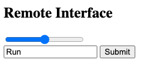
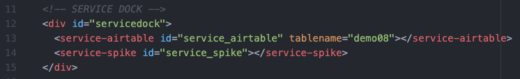
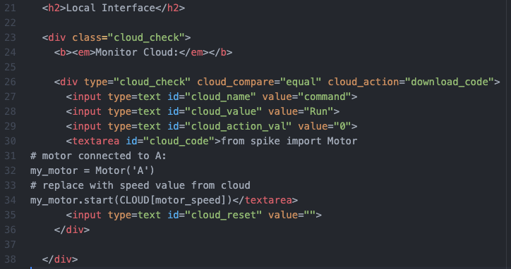
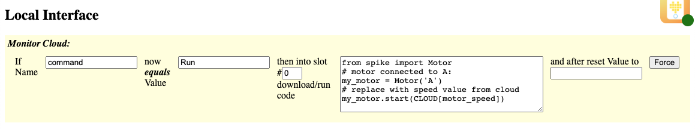

This demo shows how to use a form input which allows updates prior to pressing button.
Be sure to view the overall Documentation for configuring the cloud storage (API key, Base ID, etc) and for more information on how the entire system works.
The "Name" column has an entry "motor_speed" that will hold the updated values from the Range Slider and "command" that gets a command from the Form's Submit Button. The "Value" of motor_speed will be a number used to control the motor and the command will be "Run" when it is time to run the code.

Service Dock
The remote page has the Airtable Service Dock element. Make sure to update the tablename attribute to match your table name.
Remote Interface
The slider will change the cloud value every time it changes. But nothing will happen with the robot until the "Run" command is sent to the cloud.
See the Range Slider demo for more information about the slider functionality.
This is how the range slider and form will look on the Remote Page:

Service Dock
The local page has both the Airtable Service Dock element (make sure to update the tablename attribute to match your table name). There is also a single SPIKE Prime Service Dock element.
Local Interface
The local page isn't monitoring the motor_speed value. So nothing happens when that changes (when the user moves the Range Slider).
When the "command" value equals "Run" (e.g. when the user submits the form), then the code is downloaded and run on the SPIKE Prime. Note that there is a replace that happens in the code, this time with "CLOUD[motor_speed]" that looks up the current value of "motor_speed" in the cloud.
After the code is run, the cloud "command" is reset to nothing. This allows the user to re-submit the form and send "Run" once again.
This is how the element will look on the Local Page:
